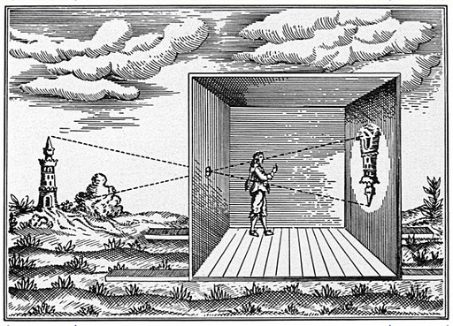
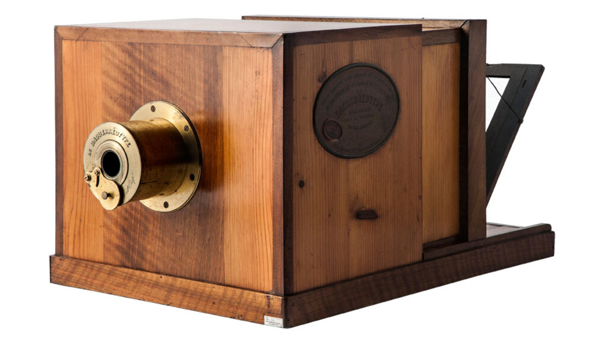
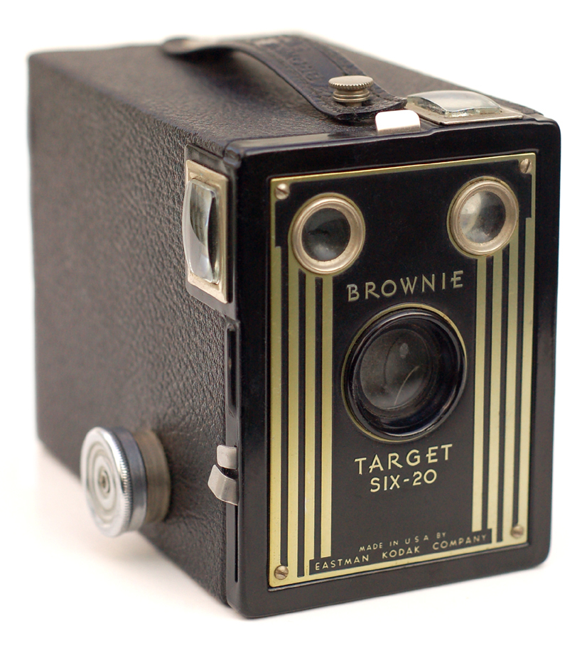
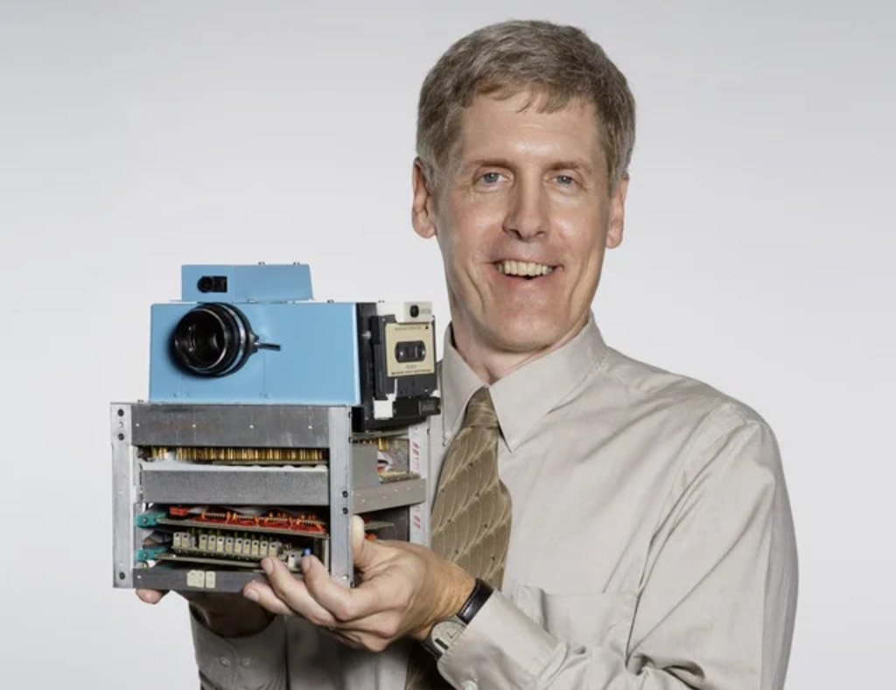
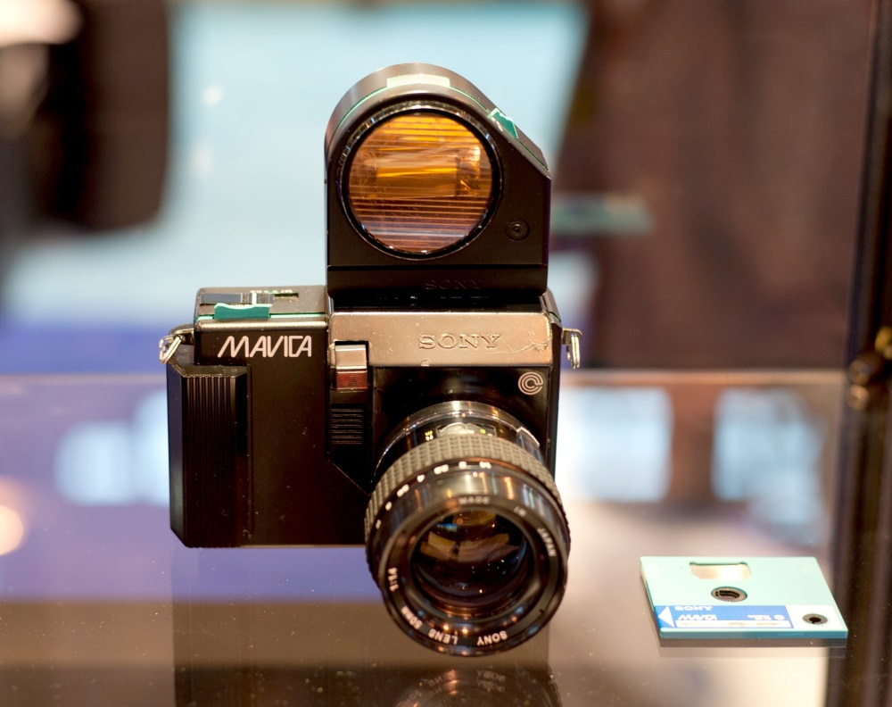
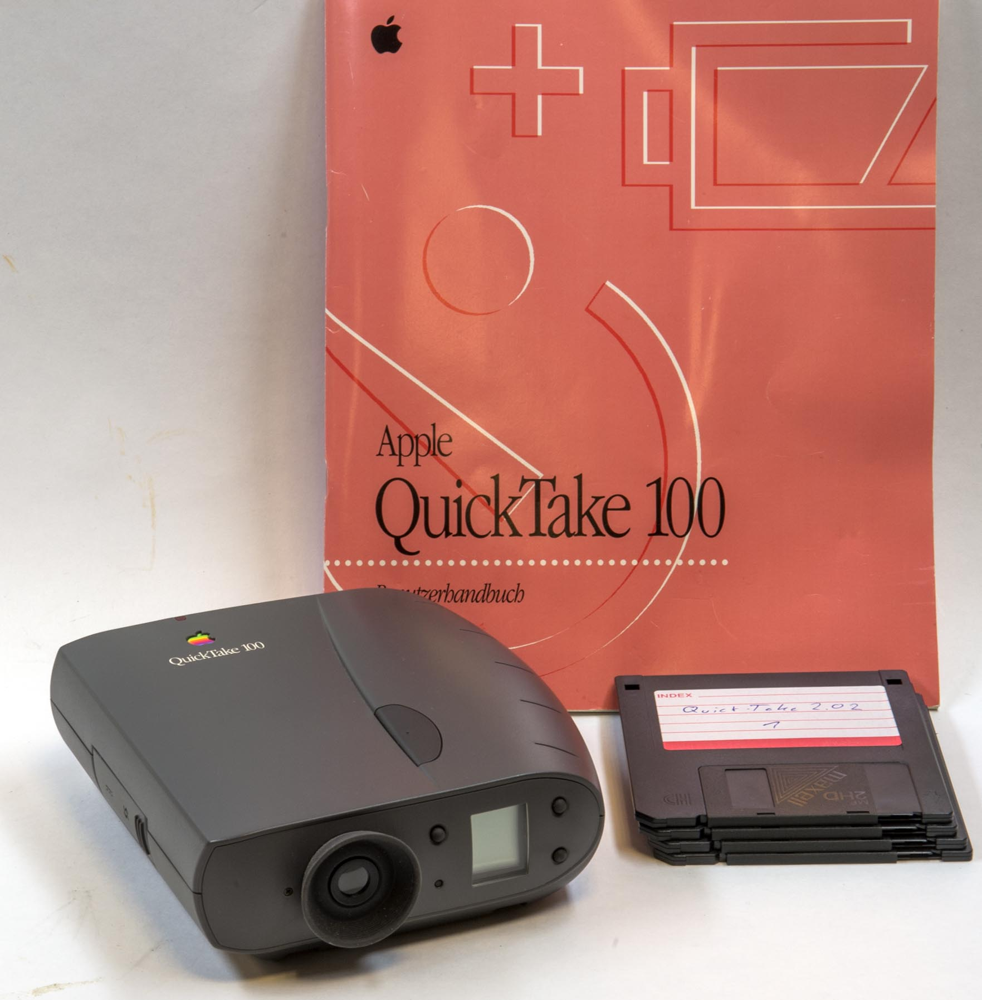

ประวัติ
"คำว่า Photography มีรากศัพท์จากภาษากรีก ผสมคำว่า Phos (แสงสว่าง) กับ Graphein (การเขียน) จึงแปลตรงตัวได้ว่า 'การเขียนด้วยแสง'
เดิมทีมนุษย์บันทึกความทรงจำด้วยการวาดภาพ ก่อนที่ในศตวรรษที่ 19 หลักการทางฟิสิกส์เรื่องแสงและหลักเคมีเรื่องสารไวแสงจะถูกนำมาผสานกันจนเกิดเป็น "การถ่ายภาพ" คำว่า Photography มีรากศัพท์จากภาษากรีก ผสมคำว่า Phos (แสงสว่าง) กับ Graphein (การเขียน) จึงแปลตรงตัวได้ว่า "การเขียนด้วยแสง" หลักการนี้ย้อนไปได้ไกลถึงอริสโตเติล นักปราชญ์ชาวกรีกผู้บันทึกไว้เมื่อกว่า 2,400 ปีก่อนว่าแสงที่ลอดผ่านรูเล็ก ๆ เข้าไปในห้องมืดจะสร้างภาพหัวกลับขึ้นบนผนังตรงข้าม ซึ่งเป็นที่มาของ "กล้องรูเข็ม" ในเวลาต่อมา
วิวัฒนาการของกล้องถ่ายภาพ

400 ปีก่อนคริสตศักราช
อริสโตเติลและนักปราชญ์ในยุคกรีกโบราณได้สังเกตและบันทึกปรากฏการณ์ธรรมชาติของแสงที่เดินทางเป็นเส้นตรง เมื่อแสงสว่างผ่านลอดผ่านช่องรูเข็ม (Pin-hole) แคบๆ เข้าไปในห้องหรือพื้นที่มืด จะสามารถฉายภาพจำลองของวัตถุภายนอกให้ปรากฏเป็นภาพหัวกลับบนฉากรับภาพฝั่งตรงข้ามได้ ปรากฏการณ์นี้เป็นที่รู้จักในนาม "Camera Obscura" (ห้องมืด) ซึ่งถือเป็นรากฐานทางฟิสิกส์ชิ้นแรกสุดที่นำไปสู่การพัฒนาเป็นกล้องถ่ายภาพในยุคถัดมา

ค.ศ. 1825 - 1839
ภาพถ่ายที่เก่าแก่ที่สุดเท่าที่มีหลักฐานหลงเหลือถึงปัจจุบันถูกบันทึกขึ้นเป็นครั้งแรกในปี 1825 ต่อมาในปี 1839 กล้อง Daguerreotype เริ่มวางจำหน่ายในราคาประมาณ 50 ดอลลาร์ ถือเป็นกล้องเพื่อผู้ใช้ทั่วไปรุ่นแรกของโลก

ค.ศ. 1900
โกดักเปิดตัวกล้อง Brownie ราคาเพียง 1 ดอลลาร์ ทำให้การถ่ายภาพเข้าถึงคนทั่วไปได้มากขึ้นและเป็นจุดเริ่มต้นของการถ่ายภาพเชิงไลฟ์สไตล์

ค.ศ. 1970 - 1976 (จุดเริ่มต้นดิจิทัลและอิเล็กทรอนิกส์)
มีการคิดค้นเซ็นเซอร์ CCD สำหรับกล้องวิดีโอในปี 1970 และบันทึกภาพดวงจันทร์ด้วยระบบดิจิทัลภาพแรกในปี 1974 ต่อมาในปี 1976 Canon ได้ประดิษฐ์กล้อง 35 มม. SLR รุ่น AE-1 ที่มีไมโครโปรเซสเซอร์สำหรับการประมวลผล ถือเป็นจุดเริ่มต้นของกล้องระบบอิเล็กทรอนิกส์ที่สมบูรณ์แบบ

ค.ศ. 1981 - 1986 (ยุคกล้องภาพนิ่งวิดีโอ)
Sony เปิดตัว Mavica ในปี 1981 กล้องภาพนิ่งวิดีโอที่จัดเก็บภาพลงแผ่นฟล็อปปี้ดิสก์ ต่อมาในปี 1986 Canon ออกจำหน่ายรุ่น RC-701 สำหรับช่างภาพข่าว ซึ่งถูกใช้บันทึกและตีพิมพ์เป็นภาพข่าวสีภาพแรกที่มาจากกล้องภาพนิ่งวิดีโอ

ทศวรรษที่ 1990 - 1999 (การเติบโตก้าวกระโดด)
Logitech ผลิตกล้องดิจิทัลตัวแรกของโลกในปี 1990 (Dycam Model 1) ตามด้วย Kodak DCS-100 (1991), Apple Quick Take 100 สำหรับผู้ใช้ทั่วไป (1994) และการเปิดตัว Nikon D1 กล้องดิจิทัล SLR ระดับมืออาชีพในปี 1999 ก่อนที่ตลาดจะเติบโตอย่างมหาศาลในศตวรรษที่ 21
วิวัฒนาการของสื่อบันทึกภาพ
แผ่นโลหะและกระจก
ในยุคแรกเริ่ม ช่างภาพต้องฉาบสารเคมีไวแสงลงบนแผ่นโลหะหรือแผ่นกระจก ซึ่งมีน้ำหนักมาก แตกหักง่าย และมักต้องเตรียมการรวมถึงล้างภาพทันทีหลังถ่ายเสร็จ
ยุคทองของฟิล์มม้วน
การคิดค้นฟิล์มเซลลูลอยด์นำไปสู่มาตรฐานฟิล์ม 35mm ทำให้กล้องมีขนาดเล็ก น้ำหนักเบา และเปลี่ยนการถ่ายภาพให้กลายเป็นสิ่งที่คนทั่วไปเข้าถึงได้ง่ายขึ้น
เซ็นเซอร์รับภาพดิจิทัล
การเปลี่ยนผ่านจากปฏิกิริยาเคมีมาสู่แผงวงจรอิเล็กทรอนิกส์ ช่วยให้เราสามารถบันทึก ดู และจัดการภาพถ่ายได้ทันที เปิดประตูสู่การถ่ายภาพในยุคปัจจุบัน
ข้อมูลเชิงลึก: แผ่นโลหะและกระจก (Photographic Plates)
ในยุคเริ่มต้นของการถ่ายภาพ กระบวนการบันทึกภาพต้องพึ่งพาแผ่นโลหะ (เช่น กระบวนการ Daguerreotype) หรือแผ่นกระจก (เช่น กระบวนการ Wet Plate Collodion) ช่างภาพจะต้องทำการฉาบสารเคมีที่ไวต่อแสงลงบนแผ่นวัสดุเหล่านี้ด้วยตนเอง
ความท้าทายหลักของยุคนี้คือ กระบวนการ Wet Plate จำเป็นต้องนำแผ่นกระจกไปถ่ายภาพขณะที่สารเคมียังเปียกอยู่ และต้องรีบล้างภาพทันทีก่อนที่สารจะแห้งสนิท ทำให้ช่างภาพในยุคนั้นต้องแบก "ห้องมืดเคลื่อนที่" (Portable Darkroom) เต็นท์ และอุปกรณ์เคมีมากมายออกไปพร้อมกับกล้องเสมอ รวมถึงตัวกระจกเองก็มีน้ำหนักมากและแตกหักได้ง่าย
ข้อมูลเชิงลึก: ยุคทองของฟิล์มม้วน (Roll Film)
การคิดค้นฟิล์มเซลลูลอยด์แบบม้วน (Celluloid Roll Film) โดย George Eastman ผู้ก่อตั้งบริษัท Kodak ในช่วงปลายศตวรรษที่ 19 เป็นจุดเปลี่ยนสำคัญที่ปฏิวัติวงการถ่ายภาพ เนื่องจากฟิล์มมีคุณสมบัติที่บาง ยืดหยุ่น ม้วนเก็บได้ และที่สำคัญคือสามารถเคลือบสารไวแสงแบบแห้งไว้ล่วงหน้าจากโรงงานได้
สิ่งนี้ทำให้ช่างภาพไม่ต้องพกพาสารเคมีหรือห้องมืดเคลื่อนที่อีกต่อไป นำไปสู่การออกแบบกล้องที่มีขนาดเล็ก น้ำหนักเบา และใช้งานง่ายขึ้นมาก โดยเฉพาะการถือกำเนิดของกล้องฟิล์มขนาด 35mm (รูปแบบฟิล์ม 135) ที่ถูกพัฒนาขึ้นโดย Oskar Barnack (Leica) ซึ่งได้กลายมาเป็นมาตรฐานสากลของการถ่ายภาพที่ได้รับความนิยมอย่างยาวนานนับศตวรรษ
ข้อมูลเชิงลึก: เซ็นเซอร์รับภาพดิจิทัล (Digital Sensors)
การเปลี่ยนผ่านเข้าสู่ยุคดิจิทัล คือการเปลี่ยนจากการใช้ปฏิกิริยาเคมีมาใช้แผงวงจรอิเล็กทรอนิกส์ในการรับแสง เซ็นเซอร์รับภาพ (เช่น CCD หรือ CMOS ในปัจจุบัน) ประกอบด้วยจุดรับแสงขนาดเล็ก (Pixels) นับล้านจุด ทำหน้าที่แปลงพลังงานแสง (Photons) ให้กลายเป็นสัญญาณไฟฟ้าและประมวลผลเป็นไฟล์ภาพดิจิทัล (0 และ 1)
ข้อได้เปรียบที่ยิ่งใหญ่ที่สุดของเซ็นเซอร์ดิจิทัลคือ ผู้ถ่ายสามารถเห็นภาพที่เพิ่งถ่ายได้ทันทีผ่านหน้าจอหลังกล้อง, สามารถปรับเปลี่ยนค่าความไวแสง (ISO) ได้ตามต้องการในแต่ละภาพโดยไม่ต้องเปลี่ยนม้วนฟิล์ม, และสามารถบันทึกภาพถ่ายได้นับพันรูปบนการ์ดหน่วยความจำเพียงแผ่นเดียว เปิดประตูสู่การถ่ายภาพยุคใหม่ที่ไร้ขีดจำกัด